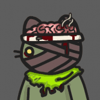
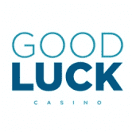

ZIPPY Zippy 是建立在 Thundercore 区块链之上的去中心化应用程序集合。 dapps 通过 ZIPPY 令牌连接在一起。用户可以通过收益耕作来铸造 ZIPPY，以获得各种收益。 Zippy dice 是 Zippy 生态系统
Zodium Zodium 是一个基于动画 3D 角色 NFT 的“Play to Earn”项目，由 LINE FRIENDs 的前联合创始人及其成员创建。 12生肖和12个星座的古老东方传说是Zodium的基
Zombie Network 每天 1% 的固定利息利润 投资者从 Zombie Network 购买 BLOOD 代币后可以存入它们。 Zombie Network 为投资者存入的 BLOOD 代币存款支付 1% 的每日利息利润。 当投资者不提取每日利息利润，并通
Zombie Outbreak Survival ZOS 是一款基于 WAX 区块链的战略性资源管理 MMORPG。 Nitel 镇是世界末日病毒爆发的归零地，控制幸存者在后世界末日的世界中清除、战斗并最终重建。 ZOS 融合
 ZombieCats 9,999 只猫在以太坊区块链上被辐射僵尸化。通过质押赚取 $CATFISH 并拥有部分猫金库的一部分。所有者将对 DAO 的资产拥有投票权。目前所有投票都在 Snapshot 上进行，其中 1 只
ZomLand ZomLand 是一款交互式 NFT 和 Play-to-Earn 收藏游戏，具有令人兴奋的游戏玩法和很多乐趣。你扮演僵尸和怪物军队的领袖角色，与世界各地的其他用户战斗并实现你的目标。 游戏
ZOO - Crypto World 加入 Free&Play 赚取 ZOO Dapp是一套智能合约，包括YIELD FARMING/Smart Pool/NFT Cards Collection/NFT Battle。 更多详情请参阅我们的文件 ZOO Crypto World 通过游戏化 DeFi 正在彻底改变 GameFi 空间。与你的
Zoombies NFT World Zoombies 是建立在稀有度、稀缺性和社区基础上的 NFT 收藏集换式卡的无限世界。Zoombies World 将区块链 NFT 的所有价值和兴奋融入到可预测规则的整洁免费组合中
ZoomSwap V2 ZoomSwap 是一个跨链基础设施项目，为第一层区块链、AMM 和合作项目建立流动性。在 IoTeX 上推出，农民有一个令人兴奋的机会来赚取 $ZM 和其他项目代币。 ZoomSwap 受益于 IoTeX
Go Poker Go Poker 是一个基于 EOS.IO 协议的去中心化德州扑克游戏平台。 Go Poker 提供专业水平的游戏体验。 支持的钱包包括 Scatter 和 Token Pocket。GGPoker 是世界上最大的扑
Goblin Finance 在这个基于 Fantom 链的 DeFi 平台上安全赚钱，2021 年最好的链！我们将创建一个安全和自动化的平台，用户可以在该平台上质押他们最喜欢的 LP 来赚取 Gobli
Goblin Wars 向大酋长致敬！ 欢迎来到地精战争！ #BSC 区块链上的#play2earn #NftGaming 游戏！ Goblin Wars 是一款策略、任务导向的游戏，具有生动的经济，灵感来自老式 RPG 和游戏
goblintownNFT AAAAAAAUUUUUGGGHHHHH 地精 地精 地精 GOBLINNNNNNNNNns 在地精镇醒来你闻 RATS oooooh 老鼠是 yummmz 这是 BLOKCHIN 上的 NEFTEEE 或 GOBBLINGS 什么？ 哦。 crustybutt goblinking 说 GEE EMMM DEDJEN RUTS 和queenie 说 HLLO SWEATIES 好的，那就是再见我们是被遗忘的妖精
GoBull Swap GoBullSwap - Yield Farming 概念 通过 GoBullSwap 上的 Yield Farming，用户可以利用将他们的加密货币置于赌注中赚取高额利息。 根据 DeFi 分析和排名平台 DeFiPulse 的数据，DeFi 协议在这些
Gods and Legends GNL 是一个成功的 NFT 集合，在多个区块链上得到验证。 WAX 区块链上的顶级多功能集合之一，共有 9 万多个社交媒体关注者。 在短短 9 个月内，它已售出超过 10 万本
Gods Unchained Gods Unchained 是区块链上的 AAA 级游戏，由 Coinbase 等投资者提供支持。 第一季独家卡牌销售现已上线 - 立即拆箱。荣幸和你们见面;我是 Fletch，Gods Unchained 的电子竞技
GOLD GRINDER GoldGrinder 是所有 BNB 矿工中改进最多的版本！ 这是一个锁定质押 dapp，可为您提供高达 9% 的投资回报。您还可以获得 12.5% 的推荐奖励。Gold Project 是一个生态系统，拥
Gold Grinder 2.0 Gold Grinder 2.0 是一款 BUSD 矿工，每天为您提供 10% 的稳定币 BUSD 奖励。 您还可以使用您的参考链接获得 10% 的推荐奖金。它来自成功的 OG Gold Grinder BNB 矿工背后的团队。 这背后有一个
Gold Miner 大家好🚀🌕！ 世界标准时间 2022 年 4 月 25 日下午 14:00 发布。 币安智能链上可持续且盈利的农业 Dapp ✅ 高达 8% 每日投资回报率无限 ✅ 总投资回报率无限制，APY 3,020% ✅ 单
GOLDBNB Mining Game GOLDBNB 挖矿游戏是一个基于币安智能链的去中心化应用程序（DAPP），平均每天向您支付 8% 的 BNB 存款到 GOLDBNBMINE 合约中。每日 ROI 百分比取决于用户在平台内采取的影响
Goldy Finance Goldy.Finance $GOLDYGoldy Token 致力于与世界各地的饥饿组织合作，帮助有需要的人。🔥 最值得信赖的 Goldy 平台 🔥目标是将其从早期项目代币转变为在金融区块链市场上服务于估值和目的
GolFinance GolFinance 是一个以 NFT 足球为主题的 DeFi 生态系统，其使命是创建一个一体化解决方案，以最大限度地提高用户收益，同时提供安全、快速和低 gas 费用的体验。 我们的目标
Gondola Finance Gondola 是 Saddle 的一个分支，但受到 Avalanche 的高吞吐量和亚秒级终结性的支持。 利用 StableSwap 算法，我们将连接 Avalanche 上的任何资产，以解决由于多个桥梁造成的碎片化流动性问题。6
Good Boi Society 收集 9,999 个独特的 Good Boi NFT 中的任何一个。 没有噱头、路线图或 defi，只有可爱的 NFT 总督。购买总督，您将收到每个 Good Boi 的 SVG 文件和 twitter 大小的 PNG。每个 Good Boi
Good Luck Casino Good Luck Casino 是基于 Tron/Ethereum 的在线赌场。 Good Luck Casino 通过无缝区块链技术提供 3D 轮盘赌、百家乐和赌场德州扑克。 当然，我们正在开发更酷的游戏，例如 Big Wheel 和 Blackja
 GoodLuck Casino Good Luck Casino 是一款以太坊和 Tron 赌场 DApp。在区块链上最好的拉斯维加斯风格赌场游戏中测试您的运气！轮盘赌、百家乐、二十一点、Casino Hold&r
Gooeys Gooeys 是 Dogira Studios 团队的一款 Play-To-Earn 游戏，具有完全代币化的经济——从游戏中的角色到任务奖励的所有内容都完全在链上，并且可以在 OpenSea 等流行平台上进行交易。 Gooeys 由 Chainlink VRF
GOOP TROOP GOOP TROOP：愚蠢的超大光学人 GOOP 完全在链上，不使用外部服务器。 GOOP 所有者可以更改其 GOOP 链上的描述，这将反映在 OpenSea 中。 GOOP 的版税为 0%，可以以多种不同